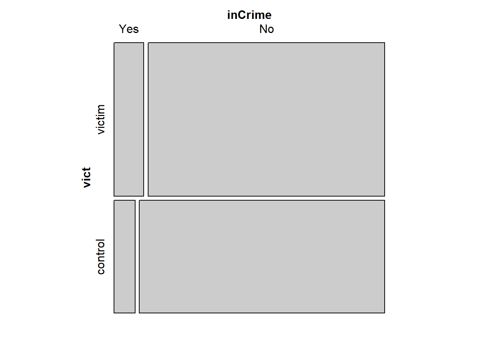
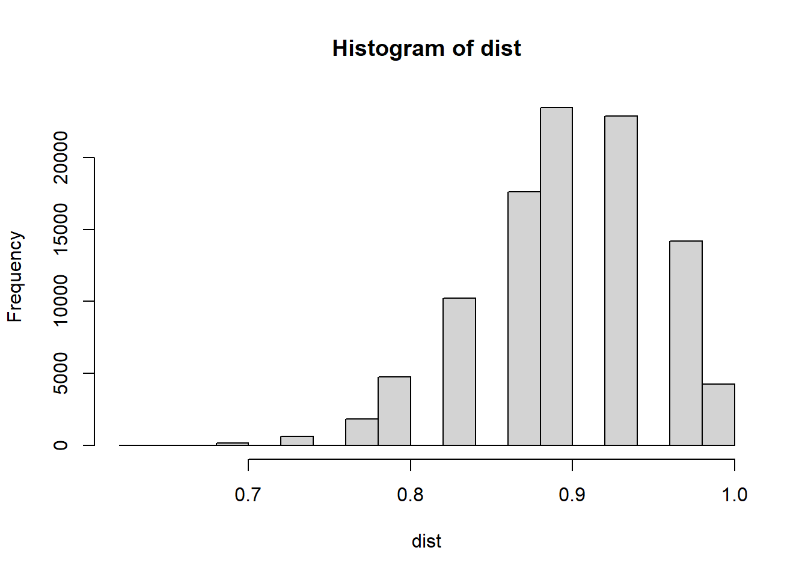
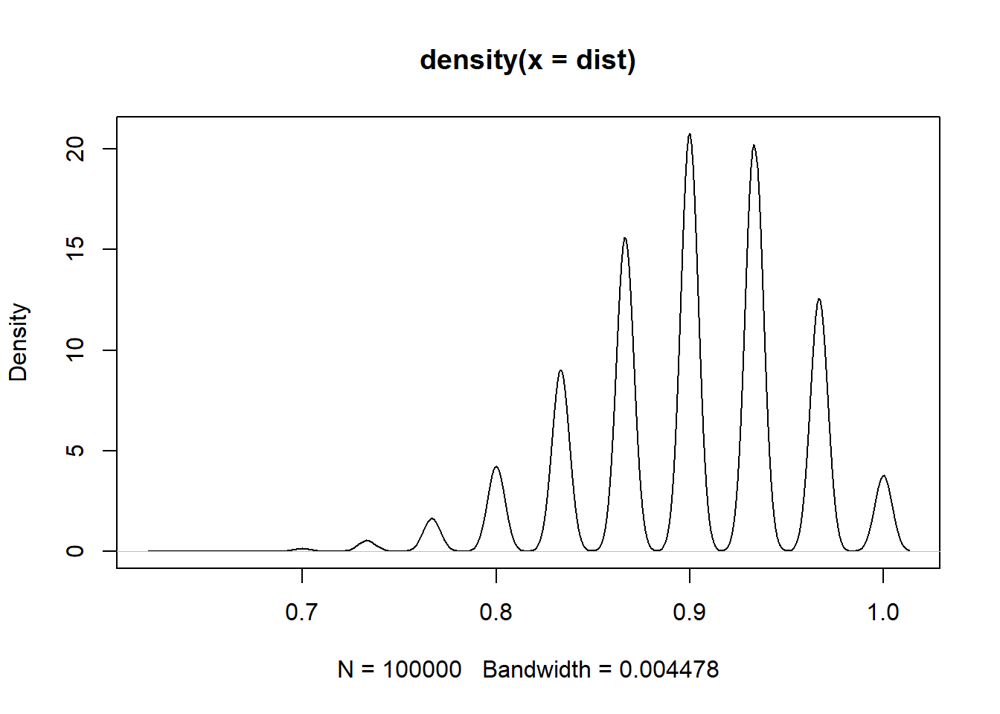
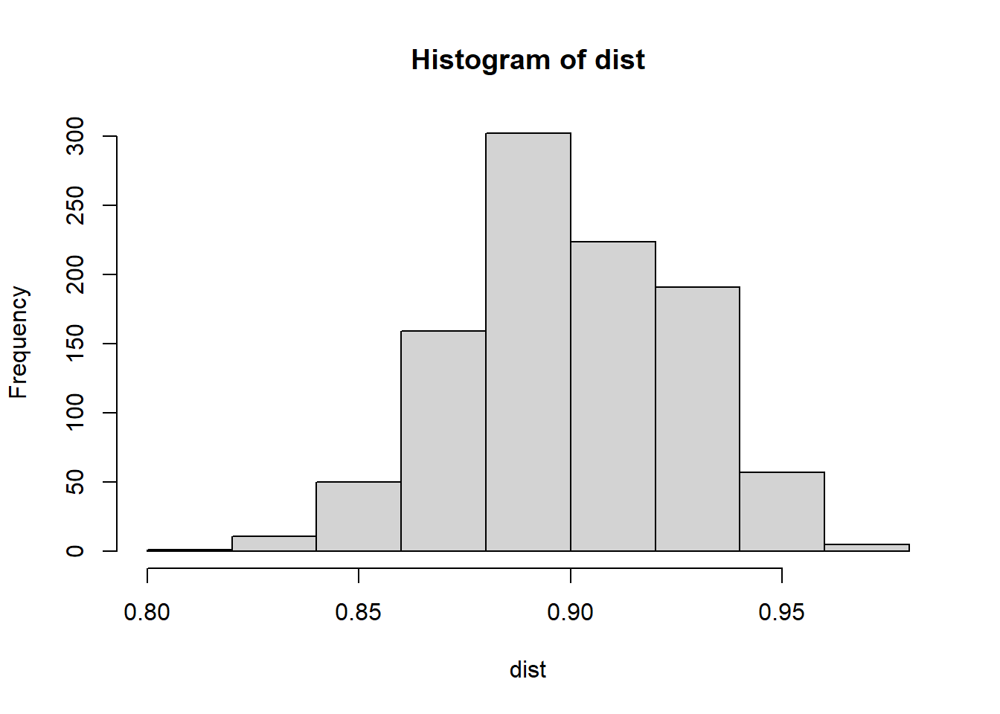
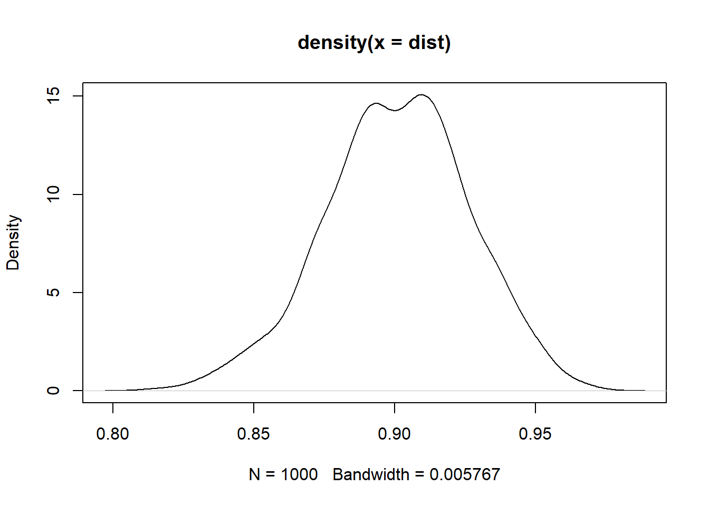
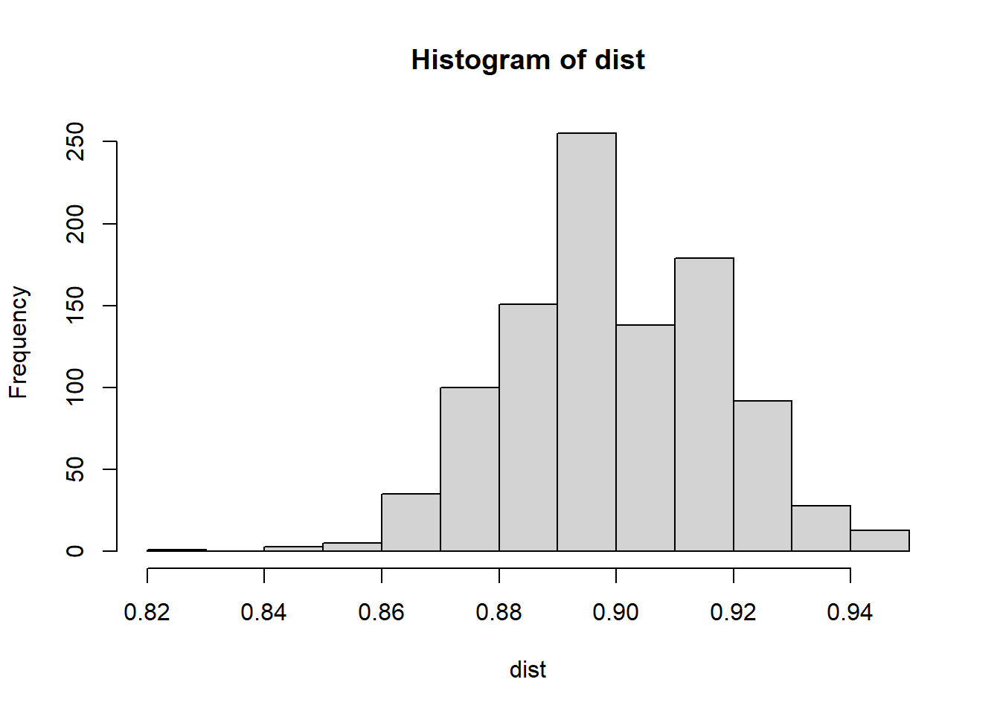
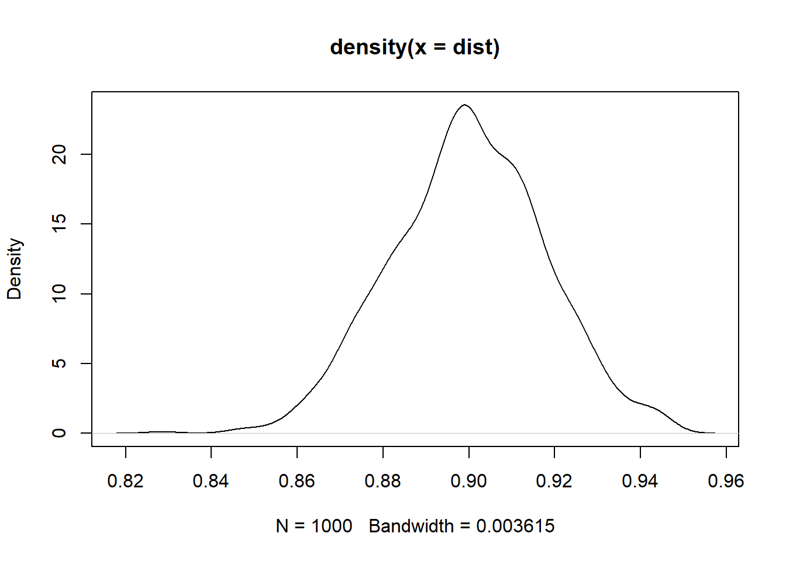

inCrime
vict Yes No
victim 102 806
control 53 614ST-518 HW 2
R Questions
1. Victims of violence
Question
(4 points) It is often argued that victims of violence exhibit more violent behavior toward others. To study this hypothesis, a researcher searched court records to find 908 individuals who had been victims of abuse as children. She then found 667 individuals, with similar demographic characteristics, who had not been abused as children. Based on a search through subsequent years of court records, she was able to determine how many in each of these groups became involved in violent crimes, as shown in the following table.
It’s retrospective, so this should be an odds ratio.
The researcher concluded: ”Early childhood victimization has demonstrable long-term consequences for violent criminal behavior.”
Conduct your own analysis of the data and comment on this conclusion. Is there evidence of a difference between the two groups? Is the strength of the causal implication of this statement justified by the data from this study?
Answer
Analysis
mosaic(violent)
The mosaic plot shows that the proportions of folks both victims and not are roughly equal, but there are more victims convicted.
chisq.test(violent)
Pearson's Chi-squared test with Yates' continuity correction
data: violent
X-squared = 4.3205, df = 1, p-value = 0.03765A p-value of 0.03765 indicates that the proportion of victims who are charged with violent crimes is not the same as the proportion of non-victims that are charged with violent crimes.
inCrime
vict Yes No
victim 102 806
control 53 614# p_1 = pop proportion, unknown
# n = sample size
n_1 <- violent[1] + violent[3]
n_2 <- violent[2] + violent[4]
# x = number of successes
x_1 <- violent[1]
x_2 <- violent[2]
# phat_1 = sample proportions
phat_1 <- x_1/n_1
phat_2 <- x_2/n_2
odds_v <- phat_1/(1-phat_1)
odds_c <- phat_2/(1-phat_2)
odds_v/odds_c[1] 1.46608The odds of being convicted of a violent crime, if the person had previously been a victim of abuse, is estimated to be about a 1.5 times greater.
Causal?
Is the strength of the causal implication of this statement justified by the data from this study?
binom.test(x_1, n_1, p = phat_2)
Exact binomial test
data: x_1 and n_1
number of successes = 102, number of trials = 908, p-value = 0.0004571
alternative hypothesis: true probability of success is not equal to 0.07946027
95 percent confidence interval:
0.09252877 0.13469469
sample estimates:
probability of success
0.1123348 There is a very low probability that those who were victimized and and those who were not are convicted at the same rate (Exact binomial test) p-value = 0.0004571)
I think the strength of the statement is justified.
Conceptual Questions
2. Challenger
(1 point) During an investigation of the U.S. space shuttle Challenger disaster, it was learned that project managers had judged the probability of mission failure to be 0.00001, whereas engineers working on the project had estimated failure probability at 0.005. The difference between these two probabilities, 0.00499, was discounted as being too small to worry about. Is a different picture provided by considering odds? How is that interpreted?
phat_m <- 0.00001
phat_e <- 0.005
odds_m <- phat_m/(1-phat_m)
odds_e <- phat_e/(1-phat_e)
odds_ratio <- odds_e/odds_m
odds_ratio[1] 502.5075The engineers thought it was about 500 x more likely the mission would fail.
3 Orange tabby cats
(2 points) Suppose that 90% of orange tabby cats are male. Determine if the following statements are true or false, and explain your reasoning.
a distribution of sample proportions
- The distribution of sample proportions of random samples of size 30 is left skewed.
There is no information regarding what is considered success. I suppose I’ll say that we are talking about male cats and if they are orange.
The sample proportion can be modeled as normal if np > 10 and n(1-p) >= 10.
[1] "np = 27n*(1-p) = 3"The success-failure condition isn’t met, I cannot say it’s normal. There are more orange male cats (successes), than not (failures).
binom <- rbinom(100000, size = 30, prob = .9)
dist <- binom/30
hist(dist)
plot(density(dist))

It appears to be True, the distribution is skewed left.
b sample size 4n
- Using a sample size that is 4 times as large will reduce the standard error of the sample proportion by one-half.
\(SE = \sqrt{\frac{p(1-p)}{n}}\)
\[ \sqrt{\frac{p(1-p)}{n}} \ = \ x\sqrt{\frac{p(1-p)}{4n}} \]
\[ \frac{\sqrt{\frac{p(1-p)}{n}}}{\sqrt{\frac{p(1-p)}{4n}}} \ = \ x \]
\[ x^2 \ = \ \frac{p(1-p)}{n} \times \frac{4n}{p(1-p)} \]
\[ x^2 \ = \ 4 \]
\(\frac{SE_{n}}{2} \ = \ SE_{4n}\)
True
c size 140
- The distribution of sample proportions of random samples of size 140 is approximately normal.
s <- 140
binom <- rbinom(1000, size = s, prob = .9)
dist <- binom/s
hist(dist)
plot(density(dist))

Mostly True, It still has a little bit of a skew.
d size 280
- The distribution of sample proportions of random samples of size 280 is approximately normal.
s <- 280
binom <- rbinom(1000, size = s, prob = .9)
dist <- binom/s
hist(dist)
plot(density(dist))

True At least it appears to be mostly normal.
4. Voters in California
(2 points) A 2010 survey asked 827 randomly sampled registered voters in California, ”Do you support or do you oppose drilling for oil and natural gas off the coast of California? Or do you not know enough to say?” Below is the distribution of responses, separated based on whether or not the respondent graduated from college.
C_Grad
support yes no
support 154 132
oppose 180 126
Don't know 104 131
total 438 389Total <- 438 + 389a percents
- What percents of college graduates and non-college graduates in this sample do not know enough to have an opinion on drilling for oil and natural gas off the coast of California (i.e., report two percent values)?
nc <- 438
nn <- 389
igc <- 104
ign <- 131
pc <- igc / nc
pn <- ign / nn
(pc*100) |> round()[1] 24(pn*100) |> round()[1] 3424% of college grads and 34% of those who did not declared ignorance.
b hypothesis test
- Conduct a hypothesis test to determine whether there is evidence that the proportion of college graduates who do not have an opinion on this issue is different from that of non-college graduates among registered voters in CA.
I hypothesize that there is no difference in the proportions of folks who declare ignorance between those with and without a college degree.
success-failure criteria:
# pc*nc
# nc*(1-pc)
#
# pn*nn
# nn*(1-pn)
pool <- (pc*nc + pn*nn)/(nc + nn)
nt <- nc+nn
pool*nt[1] 235nt*(1-pool)[1] 592All greater than 10, and I believe this survey was random. I can proceed with the test for equality of proportions.
prop.test(c(igc, ign), c(nc,nn))
2-sample test for equality of proportions with continuity correction
data: c(igc, ign) out of c(nc, nn)
X-squared = 9.5084, df = 1, p-value = 0.002045
alternative hypothesis: two.sided
95 percent confidence interval:
-0.16333768 -0.03529832
sample estimates:
prop 1 prop 2
0.2374429 0.3367609 I must reject that hypothesis, there is evidence that there is a difference in the proportion of CA voters who proclaim ignorance about off shore drilling, (p-value = 0.002045).
It appears that the true difference lies between 3.5% & 16.3%. The proportion of CA voters who proclaimed ignorance in matters of offshore drilling was 3 to 16% higher among voters who did not graduate from college.
5. British male physicians
(1 point) A study of British male physicians noted that the proportion who died from lung cancer was 0.0140 per year for cigarette smokers and 0.00010 per year for nonsmokers. Additionally, the proportion who died from heart disease was 0.00669 for smokers and 0.00413 for nonsmokers.
Which response (lung cancer or heart disease) is more strongly related to cigarette smoking, in terms of the reduction in deaths that could occur with the absence of smoking?
pls <- 0.0140
pln <- 0.00010
phs <- 0.00669
phn <- 0.00413
ols <- pls/(1-pls)
oln <- pln/(1-pln)
odds.lung <- ols/oln
ohs <- phs/(1-phs)
ohn <- phn/(1-phn)
odds.heart <- ohs/ohn
odds.lung / odds.heart[1] 87.4206odds.lung[1] 141.9736odds.heart[1] 1.624029The odds of dying from lung cancer as a smoker are 87 times that of from heart disease. Lung cancer is more strongly related to smoking than heart disease.